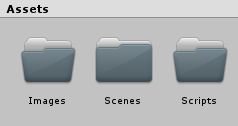
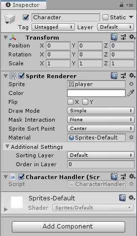
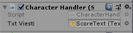

Hello Unity
Uusi projekti
Luo uusi projekti ja nimeä se haluamallasi tavalla, muista käyttää 2D-pohjaa.
Kansiot
- Valitse Assets ja lisää uusi alikansio Scripts
- Lisää myös uusi alikansio Images, ladataan tänne kuva (hiiren oikea / Import Asset..), nimeä character

Hahmo
- Hierarchy-ikkuna / hiiren oikea / Create Empty
- Nimeä Character, lisää Inspector-ikkunassa uusi Sprite Renderer
- Raahaa Assets / Images -kansiosta kuva Sprite-kohtaan
- Kokeile mitä Inspector-ikkunan toiminnot tekevät:
- Position
- Rotation
- Scale
- Color
- Flip
- Lisätään Assets / Scripts -kansioon uusi C# Script, nimeä se CharacterHandler.
- Lisää Update()-metodille koodiksi:
if (Input.GetKeyDown(KeyCode.LeftArrow)) { Vector3 position = this.transform.position; position.x--; this.transform.position = position; } - Tarkoitus on liittää tämä skripti Character-oliolle (object). Silloin this-määre viittaa kyseiseen olioon: katsotaan mikä on olion nykyinen sijainti, vähennetään sijainnin x-koordinaattia yhdellä ja laitetaan uusi sijainti oliolle.
- Raahaa CharacterHandler-skripti Inspector-ikkunassa Character-oliolle.

- Aja sovellus Play-napilla ja testaa toimiiko liikkuminen. Jos hahmo kävelee vasemmalle niin voit pysäyttää sovelluksen ja lisätä liikkumisen myös oikealle, ylös- ja alaspäin.
Jos haluat kääntää koodissa hahmon voit kokeilla SpriteRenderer-komponentin muokkaamista näin:
this.GetComponent<SpriteRenderer>().flipX = true;
Pommi
- Lisätään toinen objekti, pommi. Paina hiiren oikea / Create Empty, nimeä Bomb. Lisää Images-kansioon kuva pommista. Lisää Bomb-objektille uusi Sprite Renderer ja raahaa kuva Spriteksi. (Jos kuva näyttää liian isolta tai pieneltä voit säätää sitä kuvan ominaisuuksista Pixels Per Unit tai muokkaamalla kuvaa halutun kokoiseksi.)
Törmäys
- Tällä hetkellä ei ole käytössä mitään fyysisiä sääntöjä jotka määrittelisivät objektien toimintaa. Jotta pelaaja ja pommi ymmärtäisivät kosketuksen täytyy lisätä uusia komponentteja Insepector-ikkunassa:
- Valitse pelaaja ja lisää Component / Physics 2D / Rigid Body 2D sekä Component / Physics 2D / Box Collider 2D. Ota painovoima pois pelaajalta (Gravity Scale: 0).
- Valitse pommi ja lisää sille Component / Physics 2D / Box Collider 2D. Kokeile ajaa ohjelma ja testaa toimiiko törmäys.
- (Jos törmäys toimii niin voit kokeilla laittaa isTrigger-valintaruudun päälle, silloin tämä objekti toimii vain merkkinä törmäykselle mutta hahmo voi kävellä sen läpi.)
- Törmäys vaatii hieman koodia hahmollemme. Lisää CharacterHandler-skriptiin seuraavat metodit:
void OnCollisionEnter2D(Collision2D colInfo) { print("Törmäys " + gameObject.name + " ja " + colInfo.collider.name); } void OnCollisionStay2D(Collision2D colInfo) { print(gameObject.name + " ja " + colInfo.collider.name + " törmäävät."); } void OnCollisionExit2D(Collision2D colInfo) { print(gameObject.name + " ja " + colInfo.collider.name + " eivät törmää enää."); }
Jos haluttaisiin törmäyksien (Collision) sijaan katsoa onko tapahtunut Trigger-tapahtuma niin käytettäisiin OnTriggerEnder, OnTriggerStay ja OnTriggerExit -metodeja.
Teksti
- Lisätään teksti: Component / UI / Text TextMeshPro, kirjoita tekstiksi tässä vaiheessa "Osumia: 0". Voit kokeilla säätää tekstikentän väriä ja fonttia. Muuta Text-objektin nimeksi txtScoreText. Voit tuplaklikata Canvas-objektia nähdäksesi UI-elementtien alueen ja palata takaisin kameran näkymään tuplaklikkaamalla MainCamera-objektia.
- Seuraavaksi lisätään hahmolle (Character) koodissa tekstikenttä ja tämän tekstikentän arvoksi asetetaan kehitysympäristössä äsken tehty ScoreText.
Lisää kaksi attribuuttia CharacterHandler-luokalle:
public class CharacterHandler : MonoBehaviour { public TextMeshProUGUI txtViesti; private int osumat;Text-objektista tulee virheilmoitus kun kirjastoa ei ole vielä määritelty. Lisää siis alkuun myös:
using TMPro;
- Raahaa txtScoreText-teksti julkisen txtViesti-muuttujan arvoksi.

- Lopuksi lisätään toimintaa törmäykselle:
void OnCollisionEnter2D(Collision2D colInfo) { osumat++; txtViesti.text = "Osumia: " + osumat; }
Lisäyksiä
- Kun hahmo osuu pommiin niin aseta hahmon sijainniksi uudelleen alkupiste (esimerkiksi x:0 y:0).
- Esteet
- Lisää Assets / Create / Sprites / Square -valikosta neliö.
- Raahaa neliö Hierarchy-ikkunaan ja nimeä järkevästi.
- Lisää neliölle Box Collider 2D jotta hahmo voi törmätä siihen.
- Muodosta neliöiden avulla esteitä tai seiniä pelialueelle.